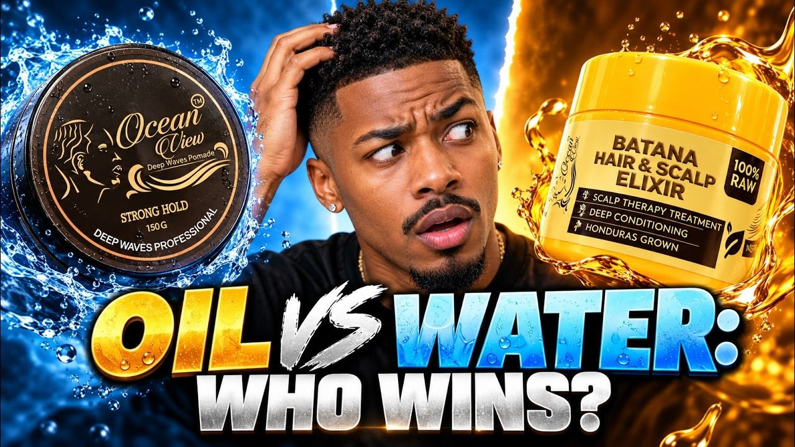

Pomade Types for Waves: Water-Based, Oil-Based and Everything Between
Every tin on the shelf says pomade, but the word covers four genuinely different products with opposite strengths. Picking the wrong family is why one waver gets hold and shine while another gets buildup and breakouts from the same shelf. Ocean View Brand (@Oceanviewbrand) ran a full 30-day water-based test in the video below — the right way to judge any product. This guide maps the families so your next purchase is a decision, not a guess.
The four families
Water-based pomades hold with a gel-like grip, shine moderately, and wash out with water alone — the beginner-friendly family and the easiest on your wash routine. Oil-based pomades, the traditional wave greases, give strong hold and high shine and survive days, but they need a real shampoo to leave and they build up if your wash game is lazy. Waxes hold the strongest of all with a matte finish, aimed at stubborn hair and short styles. Clays and fibres sit lighter, matte and textured — more a styling family than a training one.
Most wavers end up as two-product people: a daily moisturiser for health, and one pomade family for hold. The question is never which family is best — it is which family's trade-offs fit your hair and your habits.
Matching the family to your hair and life
Fine hair drowns in oil-based weight: choose water-based, used sparingly. Coarse hair drinks light products and asks for more — oil-based or wax blends earn their place there. If you wash once a week, water-based keeps buildup honest; heavy oil on a once-a-week wash schedule is how scalp problems start. Athletes and heavy sweaters should lean water-based too — it rinses out on a training schedule without a war.
Season counts as well. Summer heat melts oil-based hold and sends grease to your forehead and pillow; water-based behaves. Winter dryness flips the advice — the sealing power of an oil-based product over a moisturiser protects hair that summer products would leave thirsty.
How to test a product honestly
Judge a pomade the way the video does: one product, thirty days, no other changes. Your routine is a system, and swapping three things at once teaches you nothing. Apply the same amount, at the same point in the routine, and score it weekly on hold, shine, washout and how your scalp feels.
And respect the less-is-more law: pomade is the last thin layer of the routine, not the foundation. Moisturised, well-brushed hair needs surprisingly little hold. If you are going through tins quickly, the problem is almost never the pomade — it is the moisture and brushing underneath it asking the tin to do a job it was never hired for.
Watch: Ocean View Brand's 30-day test of a water-based pomade on 360 waves — real results, the honest way to judge a product
Video: “I Tested a Water Based Pomade on My 360 Waves for 30 Days Real Results!” by Ocean View Brand (@Oceanviewbrand) · Watch on YouTube
Shop the gear
Everything in this guide runs on the right gear: a durag that holds compression without slipping, a cap that stays put, and fabric that treats your hair right. The durag.store launch lineup is built to that standard — dual-layer construction, long tails, and stitching made to survive the routine. Join the launch list and use code GOLDSTANDARD for 15% off your first order.
Keep learning
- The Best Durag for 360 Waves: A Buying Guide Without the Hype — Basic · Buying Guides
- Reading a Durag Like a Buyer: Stitching, Tails and Fit Checks — Basic · Buying Guides
- Durag Sizing and Tail Length: Getting the Numbers Right — Intermediate · Buying Guides
Sources: Video — “I Tested a Water Based Pomade on My 360 Waves for 30 Days Real Results!” by Ocean View Brand (@Oceanviewbrand), youtube.com. Guide written by the durag.store Wave Lab.